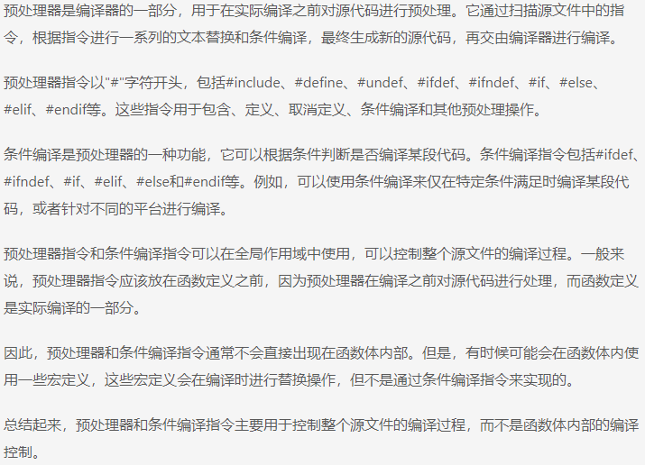
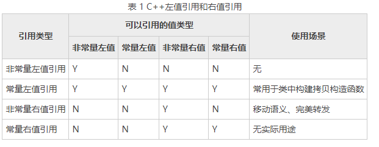

define 中的三个特殊符号：#， ##， #@
看下面三个define宏定义：
1
2
3x##y
- 表示x连接y，如
int n = Conn(123,456); //n=123456;
- 表示x连接y，如
#@x
- 给x加上单引号，结果返回是一个const char。如：
char a = ToChar(1); // a='1';
- 给x加上单引号，结果返回是一个const char。如：
#x
- 给x加双引号, 如
char* str = ToString(123132); // str="123132";
- 给x加双引号, 如
undef
- 当用完一个宏，比如MODI，不希望下面的代码再用到这个MODI,，那么就可以#undef它，那么下面如果再用到了MODI这个宏，编译器就会报错。
一种常用做法为：
1 | #define MAX 50 |
这样就只有在common.h中才能使用宏MAX。
#undef就是取消一个宏的定义，之后这个宏所定义的就无效；
值传递，指针传递，引用传递
- 值传递：形参改变不了实参
- 指针传递：传地址，形参可以改变实参（本质还是值传递）
- 引用传递：别名，形参可以改变实参
常量指针 指针常量
- 常量指针
- const 修饰 指针，指向常量，指向可以变，指向的内容不能变
- 指针常量
- const 修饰 常量，指向不可以变，指向的内容可以变
引用
- 本质是指针常量
- 引用是可以作为函数的返回值存在的。
- 不要返回局部变量引用
变量分类
C++ 变量根据定义的位置的不同的生命周期，具有不同的作用域，作用域可分为6中：
- 全局作用域
- 局部作用域
- 语句作用域
- 类作用域
- 命名空间作用域
- 文件作用域
static 全局变量:改变作用范围，不改变存储位置
static 局部变量：改变存储位置，不改变作用范围
静态函数 ：在函数的返回类型前加上static关键字,函数即被定义为静态函数。静态函数与普通函数不同，它只能在声明它的文件当中可见，不能被其它文件使用。
static全局变量与普通的全局变量有什么区别：static全局变量只初使化一次，防止在其他文件单元中被引用;
static局部变量和普通局部变量有什么区别：static局部变量只被初始化一次，下一次依据上一次结果值；
static函数与普通函数有什么区别：static函数与普通函数作用域不同，只在定义该变量的源文件内有效；
全局变量和静态变量如果没有手工初始化，则由编译器初始化为0。局部变量的值不可知。
深拷贝 和 浅拷贝
- 浅拷贝 ：
- 只是对指针的拷贝，拷贝后，两个指针指向同一个内存空间
- 深拷贝 ：
- 不但对指针进行拷贝，而且对指针指向的内容进行拷贝，经过深拷贝后的指针是指向两个不同地址的指针。
- 新对象跟原对象不共享内存, 修改新对象不会改到原对象
静态成员
静态成员就是在成员变量和成员函数前加上关键字static，称为静态成员
静态成员分为：
- 静态成员变量
- 所有对象共享同一份数据
- 在编译阶段分配内存
- 类内声明，类外初始化
- 形式为：
type class::name = value int Student::m_total = 0;- 静态成员变量在初始化时不能再加static， 但必须要有数据类型。
- 注意：static 成员变量的内存既不是在声明类时分配，也不是在创建对象时分配，而是在（类外）初始化时分配。反过来说，没有在类外初始化的 static 成员变量不能使用。
- 形式为：
- 静态成员函数
- 所有对象共享同一个函数
- 静态成员函数只能访问静态成员变量
- 静态成员变量
对象模型和this 指针
- 类内的成员变量和成员函数分开存储
- 只有非静态成员变量才属于类的对象上
- 非静态成员变量占对象空间
- 静态成员变量不占对象空间
- 函数也不占对象空间，所有函数共享一个函数实例
- 静态成员函数也不占对象空间
this 指针
- 没有非静态成员函数只会诞生一份函数实例，也就是说多个同类型的对象会共用一块代码
- this 指针指向被调用的成员函数所有的对象
- this 指针是隐含每一个非静态成员函数内的一种指针。
- this 指针不需要定义，直接使用即可。
- this 指针的用途
- 当形参和成员变量同名时，可用this指针来区分
- 在类的非静态成员函数中返回对象本身，可使用return *this
- C++中空指针也是可以调用成员函数的，但是也要注意有没有用到this指针
常函数
- 成员函数后加const 后我们称这个函数为常函数
- 常函数内不可以修改成员属性
- 成员属性声明时，附加关键字mutable后，在常函数中依然可以修改
常对象
- 声明对象前加const称该对象为常对象
- 常对象只能调用常函数
继承
- 同名静态成员处理方式和非静态处理方式一样，只不过有两种访问的方式（通过对象 和 通过类名）
纯虚函数和抽象类
纯虚函数：virtual 返回值类型 函数名 (参数列表) = 0;
当类中有了纯虚函数，这个类也被称为 抽象类
抽象类特点：
- 无法实例化对象
- 子类必须重写抽象类中的纯虚函数，否则也属于抽象类
纯析构或纯虚析构就是用来解决通过弗雷指针释放子类对象
如果子类中没有堆区数据，可以不写为虚析构或者纯虚析构
拥有纯虚析构函数也属于抽象类。
预处理器
- 预处理器是一些指令，指示编译器在实际编译之前所需完成的预处理。
- 所有的预处理器指令都是以#号 开头，只有空格字符可以出现预处理指令之前。
- 预处理指令不是C++语句，所以它们不会以分号 ； 结尾。
#define 预处理
- #define 预处理指令用于创建符号常量。该符号常量通常称为宏，指令的一般形式是：
1 |
函数宏
- 可以用 #define来定义一个带有参数的宏
1
#define MIN(a,b) (a<b ? a : b)
条件编译
- 有几个指令可以用来有选择地对部分程序源代码进行编译，这个过程称为条件编译
- 条件预处理器的结构与if选择结构很像
- 区别于预处理器
条件编译是指根据某个条件判断是否编译某段代码或包含某个文件，在代码的特定位置使用条件判断语句，根据条件的真假来决定是否编译相应的代码，通过这种方式可以在不同的条件下编译不同的代码。条件编译通常使用预处理指令来实现，例如在C语言中常用的条件编译指令是
#if、#ifdef、#ifndef等。
预处理器是一种负责在编译之前进行文本替换和宏展开等操作的工具，预处理器指令以井号（#）开头，在代码编译之前被预处理器处理。预处理器可以用来定义常量、宏、条件编译等。预处理器指令是在编译之前执行的，它们是由预处理器解释和处理的，不是由编译器解释和处理的。
因此，预处理器是一种工具，可用于在编译之前对代码进行操作，而条件编译是预处理器的一种使用方式，用于根据条件来决定是否编译特定的代码。

多线程
pthread和thread是 C++ 中两种不同的多线程库。pthread是 POSIX 线程库，属于 C 标准库的一部分，可以在多种操作系统上使用。它是一个 C 语言的库，不是 C++ 标准库的一部分，但可以通过 C++ 代码进行调用。pthread提供了一系列的函数，用于创建和管理线程。thread是 C++11 标准引入的库，属于 C++ 标准库的一部分。thread提供了一组类和函数来支持多线程编程。它是 C++ 的面向对象的多线程库，更易于使用和理解。thread库使用函数对象和函数指针作为线程函数，可以支持更灵活的线程用法，并提供了一些简化多线程编程的高级特性，比如线程同步、线程间通信等。
区别：
pthread是一种较为底层的多线程库，主要提供了线程的创建、销毁、调度等功能，需要手动管理线程的生命周期和同步机制。thread是 C++ 的高级多线程库，提供了更多的工具和功能，如线程的上下文切换、线程同步原语、线程间通信等，更加方便和安全。可以使用 RAII（资源获取即初始化）的方式管理线程的生命周期，避免手动管理资源。
C++中有几种不同的多线程库和方式，包括：
pthread库：pthread库是一个基于POSIX标准的多线程库，可以在C++中使用。它提供了一组函数来创建、同步和管理线程。使用pthread库需要在编译时链接相应的库文件。
-lpthreadstd::thread库：std::thread是C++11标准中引入的线程库。它提供了一组用于创建、管理和同步线程的类和函数，是C++中推荐的多线程编程方式。std::thread库是跨平台的，并且提供了一些方便的功能，如线程的加入(join)和分离(detach)等。
OpenMP：OpenMP是一种基于共享内存体系结构的并行编程模型。它使用指令集扩展，可以通过指令来指定并行区域，并通过线程来执行这些区域的代码。OpenMP是基于指令的并行模型，适用于一些简单的并行任务。
TBB：Intel Threading Building Blocks（TBB）是一个用于并行化C++应用程序的库。TBB提供了一些高级抽象和算法，使并行编程更加简单和高效。TBB库提供了一些并行算法，如并行循环、并行排序和并行任务调度等。
POSIX
POSIX标准是一种用于Unix操作系统的接口标准化规范。它定义了应用程序与操作系统之间进行通信和交互的方式，以及操作系统提供的功能和服务。POSIX标准的目的是使不同的Unix系统能够互操作，即使它们的内部实现和结构不同。
通俗来说，POSIX标准就是为了让不同的Unix操作系统能够“说同一种语言”，以便更方便地开发和运行应用程序。它确保了不同的Unix系统都提供了相同的接口和功能，这样开发人员编写的程序就可以在各种Unix系统上运行，而不需要进行大量的修改。
- POSIX就像是一个翻译官，把不同操作系统的语言翻译成一种共同的语言，这样程序就能够在不同的操作系统上运行，就像沟通的桥梁一样。
举个例子，假设你有一个用于Unix操作系统的程序，你想要在另一个不同的Unix操作系统上运行它。如果这两个操作系统都遵循了POSIX标准，那么这个程序就可以直接在另一个操作系统上运行，不需要对代码进行太多的修改。这就像是你在不同的国家，但是因为都说同一种语言，所以可以直接沟通交流一样。
POSIX标准化接口包括许多方面，如文件操作、进程管理、线程、网络通信、时间和定时器等。通过使用POSIX标准接口，开发人员可以更好地利用操作系统的功能，编写出更稳定和可移植的程序。
总的来说，POSIX标准化接口就是为了让不同的Unix系统能够相互兼容和互操作，使开发人员能够更方便地编写和运行应用程序。它提供了一个统一的标准，使得在不同的Unix系统上开发和运行程序变得更加简单和可靠。POSIX是一个为了统一不同的Unix系列操作系统的编程接口而制定的标准，它像是一个翻译官，让不同的操作系统能够用相同的语言交流。这样的标准化接口有助于提高开发效率，增加程序的可移植性。
POSIX（Portable Operating System Interface for Unix）是一个标准化的接口，旨在为不同的操作系统提供统一的编程接口，使得不同的Unix系列操作系统能够在同一套程序上运行。
POSIX的目的是提供一种通用的接口，以便开发人员能够编写可移植的代码，而不需要针对不同的操作系统编写不同的代码。这样不仅提高了开发效率，也使得软件更加可靠、稳定和可移植。
模板
- C++ 中的模板 是一种用于生成通用代码的工具，它可以实现不指定具体类型的情况下编写通用代码，让代码更加灵活。
- 模板可以定义成类模板，函数模板和变量模板。
- 结构模板属于类模板一种。
const成员函数
- 编译器会自动给每一个函数加一个this指针。在一个类的函数后面加上const后，就表明这个函数是不能改变类的成员变量的（加了mutable修饰的除外,后面有讲）。实际上，也就是对这个this指针加上了const修饰。
左值和右值
左值
- 赋值符号左边的值。左值是表达式（不一定是赋值表达式）后依然存在的持久对象。
可以取地址的，有名字的，非临时的就是左值；
可以放到等号左边的东西叫左值。
1
2
3
4
5
6
7左值一般有：
函数名和变量名
返回左值引用的函数调用
前置自增自减表达式++i、--i
由赋值表达式或赋值运算符连接的表达式(a=b, a += b等)
解引用表达式*p
字符串字面值"abcd"
右值
- 右边的值，是指表达式结束后就不再存在的临时对象。
不可以放到等号左边的东西就叫右值
不能取地址的，没有名字的，临时的就是右值；
将亡值和纯右值
将亡值
- 将亡值是指C++11新增的和右值引用相关的表达式，通常指将要被移动的对象、T&&函数的返回值、std::move函数的返回值、转换为T&&类型转换函数的返回值，将亡值可以理解为即将要销毁的值，通过“盗取”其它变量内存空间方式获取的值，在确保其它变量不再被使用或者即将被销毁时，可以避免内存空间的释放和分配，延长变量值的生命周期，常用来完成移动构造或者移动赋值的特殊任务。
纯右值
- 运算表达式产生的临时变量、不和对象关联的原始字面量、非引用返回的临时变量、lambda表达式等都是纯右值。
1
2
3
4
5除字符串字面值外的字面值
返回非引用类型的函数调用
后置自增自减表达式i++、i--
算术表达式(a+b, a*b, a&&b, a==b等)
取地址表达式等(&a)可见立即数，函数返回的值等都是右值；而非匿名对象(包括变量)，函数返回的引用，const对象等都是左值。
从本质上理解，创建和销毁由编译器幕后控制，程序员只能确保在本行代码有效的，就是右值(包括立即数)；而用户创建的，通过作用域规则可知其生存期的，就是左值(包括函数返回的局部变量的引用以及const对象)。
- 运算表达式产生的临时变量、不和对象关联的原始字面量、非引用返回的临时变量、lambda表达式等都是纯右值。
左值引用 右值引用
- 都是引用，都是对象的一个别名，并不拥有所绑定对象的堆存，所以必须立即初始化。
左值引用
- 左值引用要求右边的值必须能够取地址，如果无法取地址，可以用常引用；
- 但使用常引用后，我们只能通过引用来读取数据，无法去修改数据，因为其被const修饰成常量引用了。
右值引用
右值引用格式：
1
类型 && 引用名 = 右值表达式;
右值引用用来绑定到右值，绑定到右值以后本来会被销毁的右值的生存期会延长至与绑定到它的右值引用的生存期。
可以使用std::move函数强制把左值转换为右值。
1
int &&var = 10;
在汇编层面右值引用做的事情和常引用是相同的，即产生临时量来存储常量。但是，唯一 一点的区别是，右值引用可以进行读写操作，而常引用只能进行读操作。
右值引用主要用于移动语义和完美转发，其中前者需要有修改右值的权限；其次，常量右值引用的作用就是引用一个不可修改的右值，这项工作完全可以交给常量左值引用完成。

锁
std::lock_guard 和 std::unique_lock 都是C++中用于保护互斥量的工具类，可以用于实现互斥访问共享资源的功能。它们的主要区别如下：
构造方式：std::lock_guard 在构造时会自动锁定互斥量，而 std::unique_lock 可以选择在构造时锁定或不锁定互斥量。
灵活性：std::lock_guard 锁定互斥量后，不能手动解锁，只能在 std::lock_guard 对象的作用域结束时才会自动解锁。而 std::unique_lock 可以随时手动解锁，也可以重新锁定。
代码块：std::lock_guard 只适用于整个代码块范围内需要锁定互斥量的情况，而 std::unique_lock 可以在需要锁定互斥量的任意位置进行锁定和解锁。
所有权传递：std::unique_lock 可以使用 std::move() 函数将锁的所有权从一个 std::unique_lock 对象转移到另一个 std::unique_lock 对象。
综上所述，std::unique_lock 相比于 std::lock_guard 更加灵活、功能更强大。如果需要更多的灵活性和控制互斥量的锁定和解锁过程，可以选择使用 std::unique_lock。如果只需要简单地保护一个代码块范围内的共享资源，可以选择使用 std::lock_guard。
std:move
std::move 是一个 C++11 中引入的函数，它用于将给定的对象转为右值引用。
使用 std::move 可以实现移动语义，即将一个对象的资源所有权从一个对象移交给另一个对象，而不发生资源的复制或销毁。
std::move 的用法如下：
- #include
，引入 std::move 函数所在的头文件。
- #include
调用 std::move 时，将需要转为右值引用的对象作为参数传入。例如： int x = 5; int y = std::move(x); // 将 x 转为右值引用，并将其值移动给 y。
使用 std::move 可以在以下情况下获得较大的性能提升：
- 在自定义类中，如果实现了移动构造函数和移动赋值运算符，并且对象的成员变量中包含了动态分配的资源（如指针），则可以使用 std::move 进行移动操作，避免资源的复制或销毁。
- 在容器类中，如果需要将对象从一个容器移动到另一个容器，可以使用 std::move 进行移动操，改善容器元素的迁移性能。
需要注意的是，使用 std::move 后，原对象的状态将变为 “移后源状态”，在调用后不要再使用原对象，以避免悬空指针和未定义行为的发生。
- 总结起来，std::move 是一个强制类型转换，用于将给定对象转为右值引用，实现资源的移动语义，提高性能。
内存优化
C++编译器通过执行各种优化来提高程序的性能和效率。其中之一是对变量的优化，主要目标是减少内存访问和提高执行速度。编译器会将变量存储在寄存器或缓存中，以减少对内存的读写操作。这种优化可以有效地提高程序的执行效率，但也可能导致一些问题。
问题之一是优化可能导致指令的重新排序，这可能会导致多线程程序中的数据竞争。另一个问题是当变量的值被多个线程或多个硬件设备访问时，编译器可能会做出一些错误的假设，从而导致程序的行为不符合预期。
为了解决这些问题，C++引入了”volatile”关键字。”volatile”告诉编译器不要对变量进行优化，确保每次访问变量时都从内存中读取最新的值，并且每次对变量的写入都立即写入内存。这样可以保证在多线程或多设备访问下的正确性和一致性。
“volatile”关键字确保对变量的访问和修改操作具有可见性和原子性，因此适用于多线程编程和与外部设备交互的场景。然而，需要注意的是，”volatile”并不能解决所有的多线程问题，例如原子性和有序性问题，这需要使用更强大的同步机制来解决。
IO上下文
在C++中，可以使用Boost.Asio库来创建和管理I/O上下文。I/O上下文是一个重要的概念，它管理异步操作的执行和处理。
在给定的代码片段中，
ioctx被认为是一个I/O上下文对象。它使用boost::asio::io_context类来创建。boost::asio::io_context是Boost.Asio库的核心类，用于提供异步事件处理和I/O操作的功能。可以通过调用其成员函数run()来运行I/O上下文，以执行已经安排的异步操作。运行I/O上下文将启动一个事件循环，不断地处理已就绪的事件和操作。在给定的代码中，
ioctx.run()将在新线程中运行。通过调用ioctx.restart()可以重启I/O上下文，以便重新执行已经安排的异步操作。通过使用
std::thread的构造函数，可以创建一个新线程，并传递一个lambda表达式作为线程函数。在这个lambda表达式中，调用ioctx.run()来启动I/O上下文的事件循环。在代码的开始部分，使用
std::scoped_lock进行互斥锁保护，以确保threadvec向量的访问是线程安全的。综上所述，给定的代码片段在启动I/O上下文时，使用了lambda表达式来作为新线程的执行函数，以运行I/O上下文的事件循环。
虚函数
c++规定，当一个成员函数被声明为虚函数后，其派生类中的同名函数都自动成为虚函数。因此，在子类重新声明该虚函数时，可以加，也可以不加，但习惯上每一层声明函数时都加virtual,使程序更加清晰
1.定义一个函数为虚函数，不代表函数为不被实现的函数。
2.定义他为虚函数是为了允许用基类的指针来调用子类的这个函数。
3.定义一个函数为纯虚函数，才代表函数没有被实现
- 虚函数 virtual void f1();
- 纯虚函数 virtual void f1() = 0;
4.抽象类：包含纯虚函数的类，包含纯虚函数的类无法建立对象
抽象类
- 不用来定义对象，只用作继承的类都是抽象类
- 包含纯虚函数都是抽象类
- 但抽象类不都是只有纯虚函数
5.派生类中从父类继承的虚函数最好也加virtual
c++规定，当一个成员函数被声明为虚函数后，其派生类中的同名函数都自动成为虚函数。因此，在子类重新声明该虚函数时，可以加，也可以不加，但习惯上每一层声明函数时都加virtual,使程序更加清晰6.建议父类用virtual，子类用override
转载请注明来源，欢迎对文章中的引用来源进行考证，欢迎指出任何有错误或不够清晰的表达。可以在下面评论区评论，也可以邮件至 1065016533@qq.com